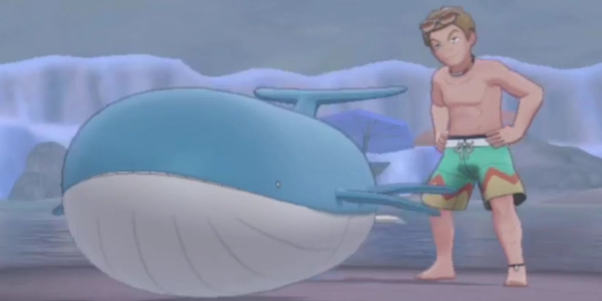
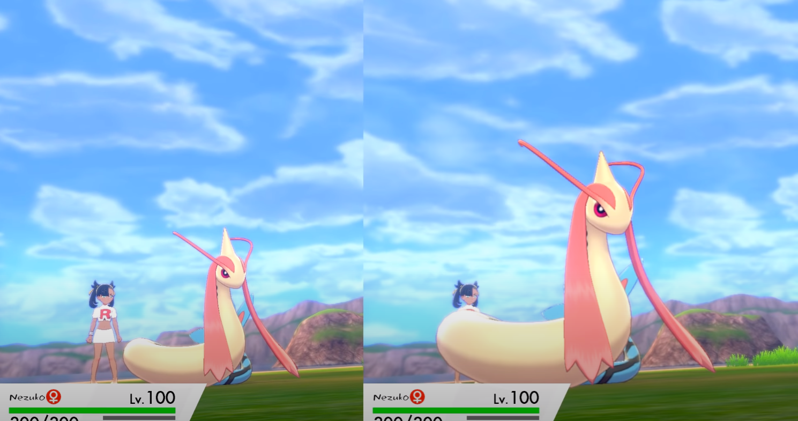
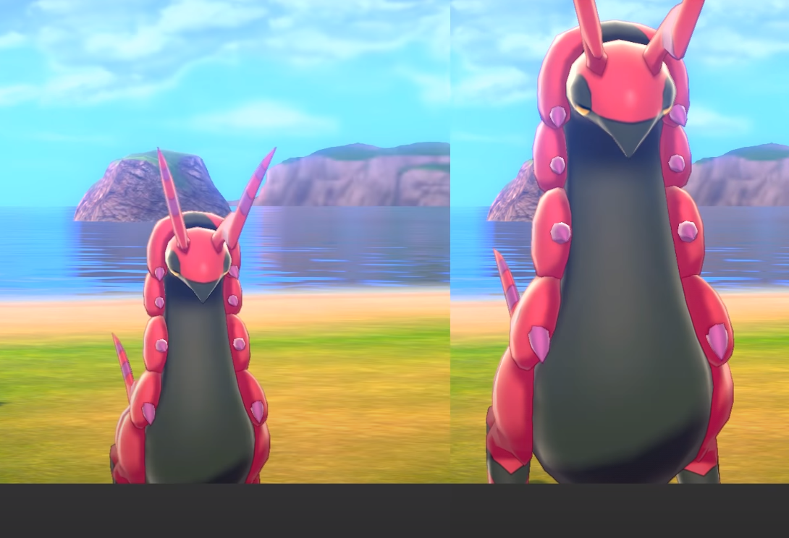
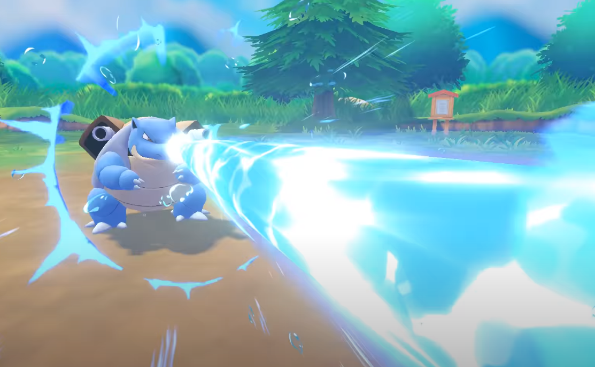

Juegos
Mas alla de los graficos, shinies y productos que pokemon produzca, siempre hay lugar para arruinarla. He aqui los errores que no necesariamente son graficos pero pertenecen a los juegos.

Se supone que Wailord es el segundo Pokemon mas grande. El primero es un hombre normal al parecer.

Milotic privado de su magnifisencia.... Y su estatura XD

Scolipede tampoco se libro de la pereza de gamefreak al escalar los modelos.

* suena MoonWalk de fondo *

Blastoice dispara agua por la frente porque claramente no tiene dos cañones especializados en tirar agua.